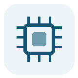

MCU 寄存器 / HAL / 外设驱动Embedded Software Engineer
把芯片手册、示波器波形和产品交付连成闭环。
我是谢佳涵，专注嵌入式软件开发，具备 MCU 底层开发、Linux 系统移植、Qt HMI、工业通信协议和精密运动控制项目经验。
READY
WUXI / EMBEDDED
Profile
面向产品现场的嵌入式软件工程师
能从芯片手册、硬件原理图、底层寄存器、Linux 驱动、HMI 界面到生产工装完整推进开发。 熟悉使用调试器和示波器定位问题，也习惯把项目中的技术点和踩坑经验沉淀成文档与模块库。
- 求职方向
- 嵌入式软件工程师
- 教育背景
- 南京信息工程大学 / 物联网工程 / 本科
- 所在城市
- 江苏无锡
Capabilities
核心能力
嵌入式软件开发
熟悉 C/C++、寄存器配置、HAL 库、外设驱动、内存优化和底层问题定位。
MCU 与 Linux 平台
具备 STM32、中微、九齐、AM243x、AM62x、IMX6ULL 等平台项目经验。
工业通信
熟悉 UART、IIC、SPI、Modbus、CAN、BiSS-C、EtherCAT、Profinet。
Qt 与人机交互
熟悉 Qt5/C++，理解信号与槽、线程模型，具备嵌入式 HMI 开发经验。
硬件协同与控制
能阅读原理图并结合硬件完成软件落地，具备速度环、位置环等控制实践。
Experience
工作经历
无锡宁动光电科技发展有限公司
嵌入式软件工程师
- 负责编码器测试设备 ETB 的 HMI 与 ARM + FPGA 应用开发，深入使用 BiSS-C 通信协议。
- 基于 TI AM62x 完成 Linux 内核开发、设备树适配、LCD 与 GT911 触摸芯片适配。
- 移植 AgileModbus 到 TI AM243x，采用双核架构分别运行 Profinet 主站与 Modbus TCP。
- 参与读数头相关软硬件调试，将 ABA128 定位精度提升至约 ±1 um。
无锡核晶科技电子有限公司
嵌入式软件工程师
- 负责家电产品方案软件开发，使用中微、九齐等单片机完成底层驱动和业务逻辑。
- 结合 EDA 原理图与芯片手册完成寄存器配置，并编写部分芯片库函数。
- 完成 433MHz 无线接收、ADC 消抖、触摸检测等外设开发和异常排查。
无锡新图云创科技发展有限公司
机器人工程师
- 负责桌面级机械臂电控开发，推动围棋场景落地，产品曾在 2023 世界机器人峰会展出。
- 封装和优化机械臂控制模块，并实现现实机械臂姿态与 Blender 虚拟场景联动。
Selected Work
项目经历
ARM + FPGA 光学编码器配置手持终端 ETB_Dolphin
基于 AM62x + Linux 6.1.80 完成系统移植、设备树适配、LCD/触摸外设适配和 Qt5 编码器配置界面开发；通过 GPMC 与 FPGA 通信实现 BiSS-C 协议链路。
光控庭院遥控灯
基于中微 SC8P054 单片机完成方案开发，使用 50 us 定时器中断实现红外解码，结合 ADC 与 PWM 在 2K 程序空间内完成复杂业务逻辑。
桌面级机械臂下棋场景
基于 Air724 控制板和飞特 ST3215 舵机完成两自由度机械臂驱动控制，使用树莓派 4 与 OpenCV 完成棋盘标定、运动补偿和棋子识别。
Resume
个人简历
谢佳涵 / 嵌入式软件工程师
具备嵌入式软件、Linux 系统移植、工业通信协议、Qt 人机交互和单片机底层开发经验，能从芯片手册、硬件原理图到软件架构落地完整闭环。
教育背景
南京信息工程大学 / 本科 / 物联网工程 / 2018 - 2022
核心关键词
C/C++、STM32、AM62x、AM243x、Linux、Qt5、BiSS-C、EtherCAT、Profinet、Modbus、CAN。
求职定位
希望在嵌入式软件、工业通信、Linux 系统移植和精密运动控制方向持续积累。
Contact
欢迎联系
如果你的团队需要嵌入式软件、Linux 平台或工业通信方向的工程师，可以通过邮箱联系我。